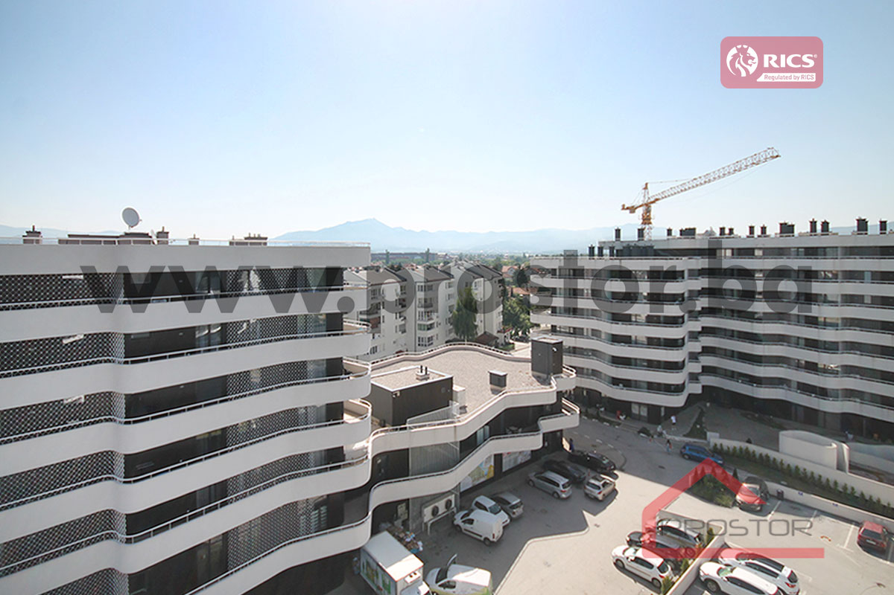
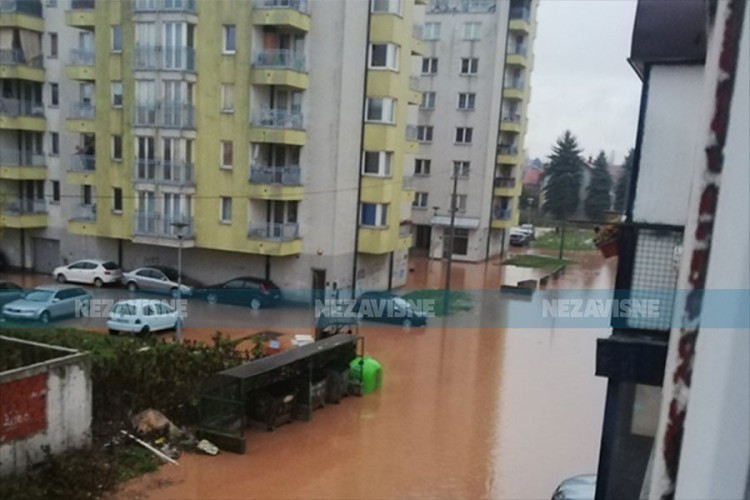

Otes je naselje u općini Ilidža, Sarajevo. Poznato je po svojoj zajednici i razvijenom kulturnom životu.
Naselje je prošlo kroz različite faze razvoja i predstavlja primer multikulturalnosti u Bosni i Hercegovini.
Stanovnici Otesa su poznati po solidarnosti i zajedničkom radu na unapređenju svog naselja.
  Nazad na početnu